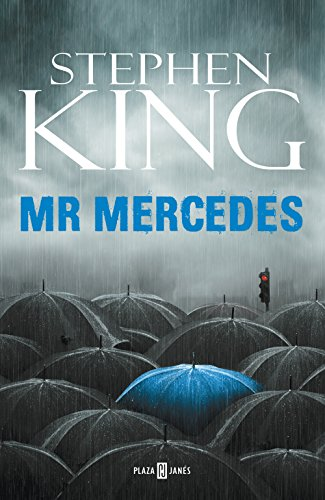

Buen libro y excelente saga de Stephen king Un detective retirado es atormentado por un asesino en serie a través de una serie de cartas y correos electrónicos
Sebastian
Quien pierde paga
Buen libro y excelente saga de Stephen king Un detective retirado es atormentado por un asesino en serie a través de una serie de cartas y correos electrónicos
Tadeo
Fin de guardia
Buen libro y excelente saga de Stephen king Un detective retirado es atormentado por un asesino en serie a través de una serie de cartas y correos electrónicos

Luis Angel
El visitante
Buen libro y excelente saga de Stephen king Un detective retirado es atormentado por un asesino en serie a través de una serie de cartas y correos electrónicos